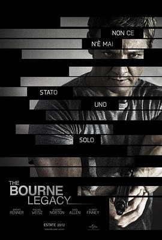

谍影重重4 / The Bourne Legacy
又名：叛谍追击4：机密逃杀(港) / 神鬼认证4(台) / 谍影重重4：伯恩的遗产
算是外传了，节奏没有之前几部紧张。最后确实，CIA真是安全！
作品信息
| 导演 | 托尼·吉尔罗伊 |
| 编剧 | 托尼·吉尔罗伊 / 丹·吉尔罗伊 / 罗伯特·陆德伦 |
| 主演 | 杰瑞米·雷纳 / 斯科特·格伦 / 斯泰西·基齐 / 爱德华·诺顿 / 唐娜·墨菲 / 迈克尔·切鲁斯 / 寇瑞·斯托尔 / 蕾切尔·薇兹 / 尼尔·布鲁克斯·坎宁安 / 泽利科·伊万内克 / 罗伯·莱利 / 阿尔伯特·芬尼 / 丹尼斯·布特斯卡里斯 / 奥斯卡·伊萨克 / 大卫·斯特雷泽恩 / 克里·约翰逊 / 詹妮弗·金 / 佩姬·梁 / 大卫·威尔逊·巴恩斯 / 吉塔·雷迪 / 汤姆·里斯·法雷尔 / Anitha Gandhi / 克里斯托弗·曼恩 / 比利·史密斯 / 克莱顿·巴伯 / 伊丽莎白·马弗尔 / 迈克尔·帕帕约翰 / 大卫·雷奇 / 迈克尔·贝雷瑟 / 迪德尔·古德温 / 萨姆·吉尔罗伊 / 莎珑·华盛顿 / 弗兰克·迪尔 / 杨罗布 / 凯瑟琳·科廷 / 马特·奥伯格 / 法耶·伊薇特·麦奎因 / 约翰·阿基拉 / 肖恩·雅克博森 / 艾伦·乔 / 乔纳森·埃斯比奥 / 琼·瓦勒拉 / 路易斯·小泽·张简 / 玛德琳·尼古拉斯 / 鲁比·鲁伊斯 / Alvin Zalamea / Spencer Sano / Julie Ysla / 乔尔·托雷 / 伊恩·布莱克曼 / 琼·艾伦 / 乔迪·阿普尔盖特 / 凯伦·皮特曼 / 马丁·巴兰坦 |
| 类型 | 动作 / 悬疑 / 惊悚 |
| 制片国家/地区 | 美国 / 日本 |
| 语言 | 英语 / 俄语 / 菲律宾语 / 乌克兰语 |
| 上映日期 | 2012-10-25(中国大陆) / 2012-08-10(美国) |
| 片长 | 135分钟 |
| IMDb | tt1194173 |
最后一次看到是 2026-08-01T11:07:27+10:00 · 豆瓣原页